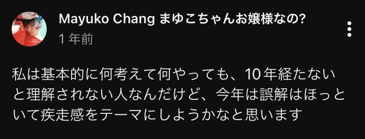

1年の振り返りみたいな
こんな事を年始に言っていて、ほんとうにその通りの年になった。 まずは、インフラ系の講義をまた受けに行って、 日本の公教育文化がやっと体験できてカルチャーショックをしっかりやり、 いちゃもん付けられたのが元で腸内洗浄の文化的・実践的な立ち位置とダイアナ妃の事を考えて、 流れで土に興味を持ち、農学部受験まで考えたりしつつ家で微生物を育て出して、 ピーチ姫事件、 続いてというか同時進行で開業準備、 6月初めに友達のバレエ発表会を観にバンコクに行って、 両親のあたおかが原因で学生時代の古い友達にシンガポール迄会いに行って、 そのまま婚約、 猫に愛され過ぎてノイローゼになり、 外地での初めての就活、 元の専門であるコンピュータ科学のギャップイヤー6年間を埋める勉強を始めて、 デンマークで雇われてECOC2025に出席、 ムスリムからの人種差別を受け警察官と大バトルになってしまいスーツケースを破壊されて、 田舎生活で他のスウェーデン猫に死ぬほど愛され、 インド系の文化と衝突し死ぬほど苦しみながらマヌ法典を学び、 ロシア人と生活、 ブログ開設、 入院によりスウェーデン人の内の特に倫理的な人達との出会い、 通奏低音的にずっと愛してやまないのにうまくいかない人生の荷物と格闘…、 こんな感じだ。誰も理解できないとしても速度を落とす気がなかった。 やっぱりいつも誰も付いてこない。速すぎて10年かかってやっと理解される。何をしているのか誰にも分からない。 だから私は他者といる方が孤独だ。自分やこれと決まった大切な人は私をすぐに分かるので仲間だと思える。 今年は巧く11月25日の死を免れたと思っていた。遅れて来ただけだった。昨日全身痙攣発作が夜中に3回あり、全身が腫れて38.9度の熱があった。合わない人達に接近されると本当に体調が悪くなる。仏教的な修行の程度が低い人が物凄く嫌いだ。体調が悪くなる。病院に連絡したらすぐに病院に行けと言われたけど、全身痙攣発作が出ている人が一体どうやったら病院に辿り着けるんだろう。私はたった1人で正しい方向に歩いている。だけどとても苦しい時もある。昔から変わらない孤独な道だ。私は恐らくほとんどの人が想像もできない人生を1人で歩いて来たが、それはいつも軽やかに笑顔でやるのが好きだ。これからも変わらないと思う。そういう人なのだ。私はこれは品格だと思う。というか、もっと正確に言えば、"苦しい時こそ笑う"人間心理を常態化できてない人って苦労が足りないんじゃないかと思う。こんな強い人間としての積み重ねが、朝鮮総連に狙われた時に最後まで勝ち切る人間を作った。私は試され、そして勝った。神とともにいつもある。ほら、お気に入りの勘違いを堂々とやったら？"あんな小さい女でも"勝てるんだったらあなたでも勝てるでしょ。ねぇ。ほんとうにくだらない思いをさせられている。そして、どうせ分からないだろうけど私はこれでも幸せだ。たぶんあなた達よりもずっと。幸せを比較する感性はないのでうんざりしながら書いている。 それにしても毎年毎年死にかけるのに死なない。飽きないのかな。死の方で。 仏教的な修行が浅い人達は"あの子と仲良くなりたかっただけなのにあの子が無視するの"とかのたまいやがりなさるけれど、こちらは体調に直結してあなたが有害なんですよと思う。私があなたと仲良くなりたくない気持ちが尊重されていない。私の気持ちを尊重しないお友達はお友達だろうか？嫌いだ。"仲良くなりたい"のなら私の望みをもっと繊細に読み取って叶えてみたらどうかと思うけどギャーギャー喚くだけだ。嫌いだ。
← Back to Blog